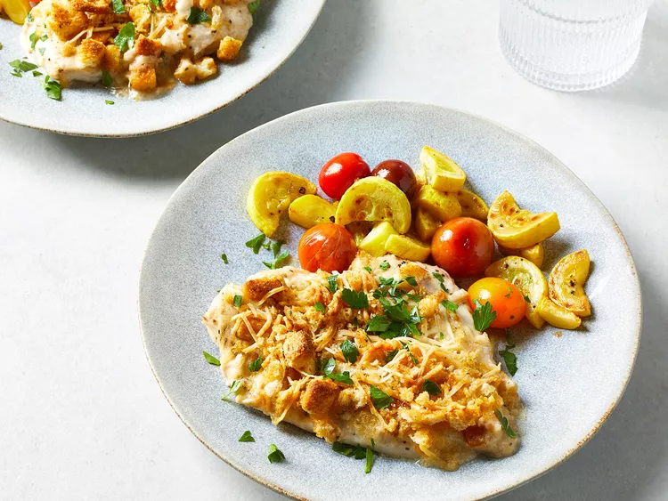

Baked Caesar Chicken

A recipe perfect for simple weeknights at home.
For this baked Caesar chicken recipe, chicken breast is coated in a creamy dressing and sprinkled with buttery Parmesan topping resulting in crispy, juicy chicken.
Ingredients
- 1/2 cup Caesar salad croutons, crushed
- 1/2 cup shredded Parmesan cheese
- 1 tablespoon butter, melted
- 4 skinless, boneless chicken breasts (1 1/2 to 2 pounds total)
- 1/2 teaspoon freshly ground black pepper
- 1/4 teaspoon salt
- 1 cup creamy Caesar salad dressing
- 1/3 cup sour cream
- 1 tablespoon all purpose flour
- Chopped fresh parsley to taste for garnish
Steps
- Gather all ingredients. Preheat oven to 375 degrees F (180 degrees C). Coat a 2-quart baking dish with nonstick spray.
- Combine crushed croutons, Parmesan cheese, and butter; toss to mix. Set aside.
- Place chicken breasts between 2 sheets of plastic wrap. Pound to an even thickness with a meat mallet.
- Sprinkle with pepper and salt on both sides and place chicken into the prepared baking dish.
- Stir together salad dressing, sour cream, and flour in a small bowl.
- Spoon salad dressing mixture over chicken and turn to coat.
- Top with crouton mixture.
- Bake in the preheated oven until topping is browned and chicken is longer pink in the center and the juices run clear, 25 to 30 minutes. An instant-read thermometer inserted into the center should read at least 165 degrees F (74 degrees C). Garnish with parsley.